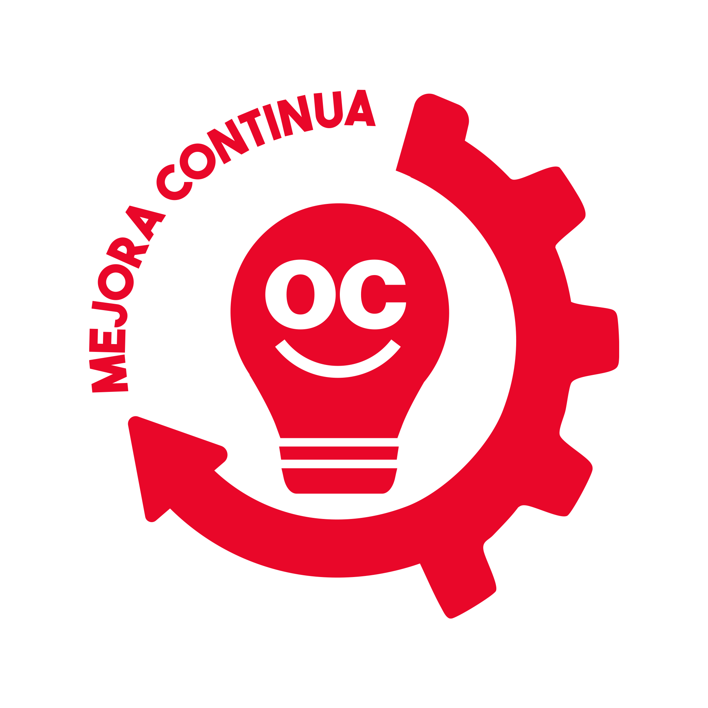

Comparte tu idea de mejora
Tu experiencia puede hacer nuestro trabajo más seguro, sencillo y eficiente.
Escanea el código y registra tu propuesta
Apodaca
El Carmen

Tu experiencia puede hacer nuestro trabajo más seguro, sencillo y eficiente.
Escanea el código y registra tu propuesta